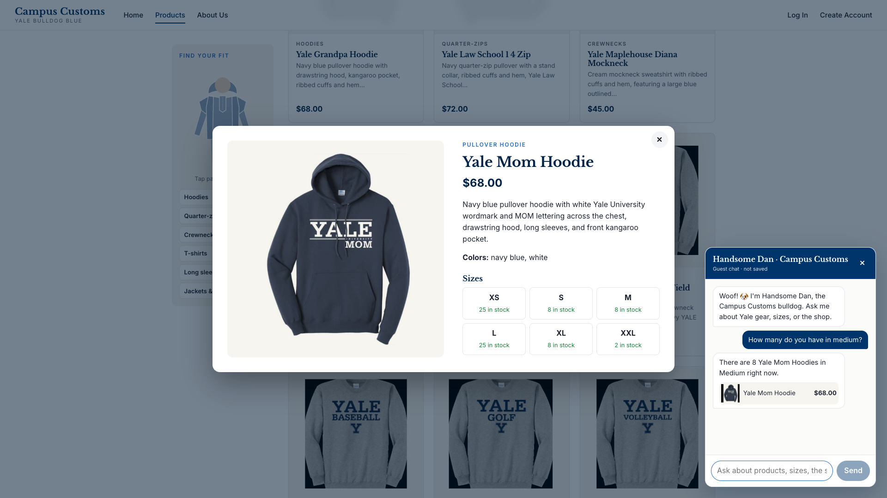
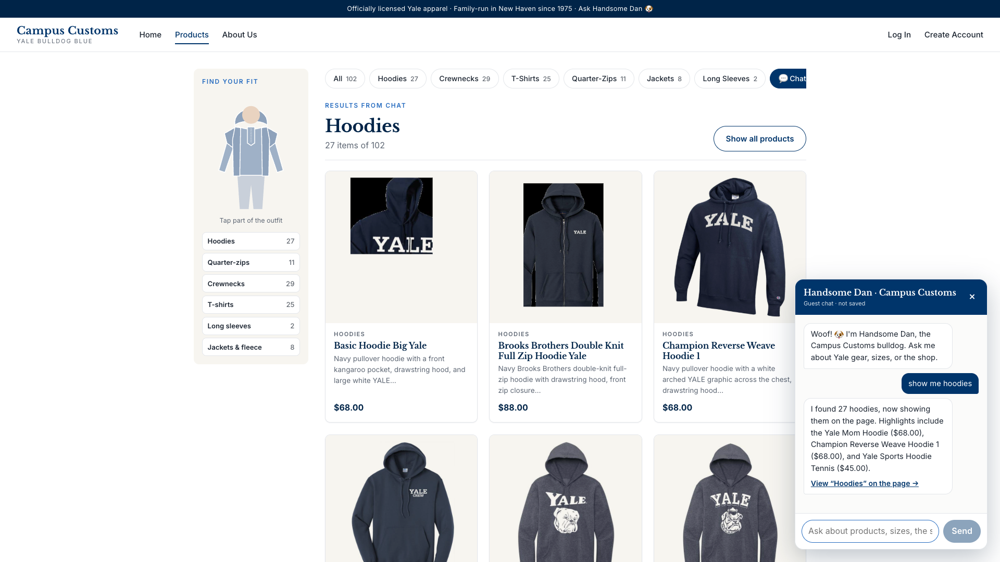
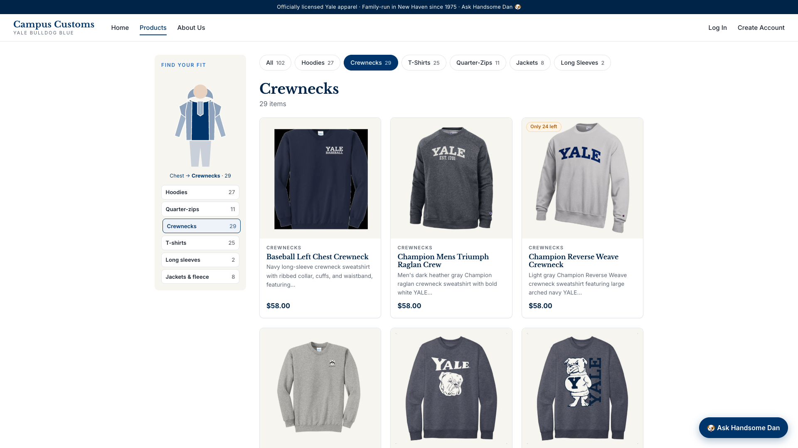
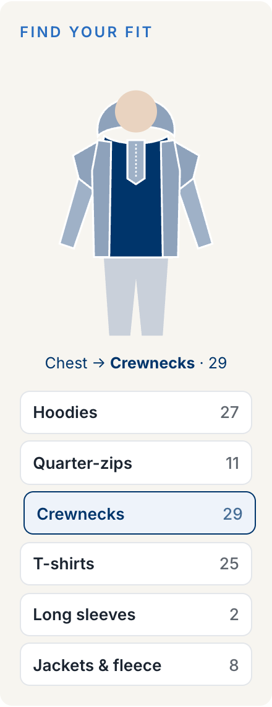

Summary
| # | Check | What the screenshot shows | Database | Result |
|---|---|---|---|---|
| 1 | Chat checks an item's inventory from the database | Handsome Dan: "8 Yale Mom Hoodies in Medium" | M = 8 | ✓ Pass |
| 2 | A category question in chat makes search-result cards appear | "show me hoodies" → page shows "Hoodies · 27 items of 102" | 27 hoodie-type products | ✓ Pass |
| 3 | Usability feature: "Find your fit" body-part picker | Chest hovered (Yale blue) → Crewnecks tab, 29 cards | 29 crewneck-type products | ✓ Pass |
How these were captured: the app ran locally exactly as the README describes (backend
uvicorn main:app --reload --port 8000, website npm run dev on port 5173). It was
driven by a script in headless Chrome at 1920×1080 as a logged-out guest, with real AI answers (no mocks).
Every number below was then checked against data/campus_customs.db with SQL. Click any
screenshot to open it full size.
1Chat checks the inventory level of an item from the database

What this proves: the agent looked up live stock with its check_stock tool
and answered "8 in Medium." That matches the product's own size grid on screen (M · 8 in stock). It also
knew which product "you" meant from the page the shopper was on.
Why it's useful: shoppers get a fast, trustworthy answer without reading a size grid, and the store never promises stock it doesn't have, which means fewer disappointed customers and cancelled orders.
Database: SELECT quantity FROM inventory WHERE product_id='yale-mom-hoodie' AND size='M' → 8 ✓
2Dynamic search-result cards appear after a category question ("hoodies")

What this proves: the agent returned structured product results (IDs plus the label "Hoodies"), and the website rendered them as cards (image, name, price, short description) under "Results from chat · Hoodies · 27 items of 102." The chat reply gives the count and a few highlights rather than listing all 27.
Why it's useful: one plain-English question replaces scrolling through 102 products, and every match shows up with its photo and price, one click from its page. The cards come from the database, so the prices on screen are always the real ones.
Database: SELECT COUNT(*) FROM catalogue WHERE garment_type LIKE '%hood%' → 27, the same 27 products shown ✓
3Usability feature: "Find your fit" body-part picker




What this proves: shoppers can filter by tapping part of an outfit instead of reading a menu. Hovering the chest turns it Yale blue and names it ("Chest → Crewnecks · 29"); tapping it filtered the page to the 29 crewnecks, with the matching tab and legend highlighted. It's built on the same category selection as the tabs, so the two always agree.
Why it's useful: it's the quickest way to say "something with a hood": no typing, no waiting, and no AI cost. It also makes the shop memorable and a little fun to browse.
Database: products whose garment_type maps to Crewnecks (crewneck, raglan, mockneck) → 29 ✓
More detail: output/usability.md (all usability improvements) ·
output/harness.md (how the agent, tools, and data work) · output/design.md (visual design).